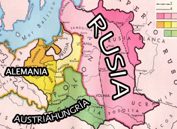

De: La Frikipedia, la enciclopedia extremadamente seria.
De: La Frikipedia, la enciclopedia extremadamente seria. De: La Frikipedia, la enciclopedia extremadamente seria.
| De la serie Países del planeta tierra: | |||||
| Polonia para algunos; Polandia para otros. | |||||
|---|---|---|---|---|---|
| |||||
| Lema: Invádenos con cuidado | |||||
| Himno: Marica tu, marica yo.. marica aaajaa
| |||||
|  Mapa de Polonia
| |||||
| Capital | Papamóvil | ||||
| Mayor ciudad | La que este sin invasor en algun momento. | ||||
| Lenguas oficiales | Keliano y Fresisuisiano. | ||||
| Gobierno | Republica bicameral Alemano-Rusa con tintes polacos. | ||||
| Gran conquistador | Angela Putin | ||||
| Área | Total: Considerable, Independiente: Poca... | ||||
| Población | Muchos alemanes, rusos y pinguinos de Kelia. | ||||
| Moneda | Utilizan trueques y favores sexuales | ||||
| Zona horaria | GTMP (siempre tarde) | ||||
| Dominio Internet | .poloflash | ||||
| Código telefónico | #Frentedecombate (en bases militares rusas o alemanas)
| ||||
| Lleno de fabricas de polos | |||||
«Mierda, invadidos otra vez.»
~ Un polaco acerca de la nueva situación de su país.
«Así que el papa es polaco... Mierda, nos vuelven a invadir»
~ Dos polacos disertando acerca de la utilidad de Polonia en el mundo.
«Bien, tú te quedas con el norte y yo con el sur. ¿Te vale?»
~ Hitler y Stalin hablando de Polonia.
«¡Acabad con ese puto pianista!»
~ Un nazi acerca de la seguridad social polaca.
Más conocido como Colonia. (Sobre todo en Rusia; Alemania y en ocasiones Austria o empresas multinacionales.)
Polonia es conocida, aparte de existir entre invasión y invasión como estado nacional, por sus innumerables fabricas de helados, y por esos gorritos tan humillantes que llevan. Sus habitantes también se les llaman catalanes. (Aunque si le llamas a alguno eso te da una hostia)
En realidad nadie sabe donde esta Polonia. Además de ser el país más desconocido para todo el mundo, Polonia nunca ha tenido fronteras fijas ni recursos propios, lo que le ha impedido ser algo relevante a lo largo de la historia.
Se rumorea que Polonia está ahora mismo entre Alemania y Rusia, pero nunca se llegará a saber con total certeza debido a que ambos países lo niegan. Lo que sí es cierto, es que un tiempo atrás hubo un lugar llamado Polonia el cual servía de alimentación y abastecimiento de rercursos para todos los países vecinos a este país.
Se desconoce si la zona llamada Polonia (insistimos en que no es segura su existencia) tiene montañas, ríos o algo, debido a que los 365 días del año está cubierta de nieve e hielo, por lo cual distinguir algo en ese paisaje se hace realmente difícil. Además, si algo existiera tanto alemanes como rusos lo cubrirían con un par de bombazos y unos cuantos tiroteos.
La historia de Polonia es algo fugaz, ya que existe temporalmente entre países verdaderos, tanto que algunas personas carecen de datos de su existencia y creen que solo existe en la mitología.
La gran tradición polaca de las invasiones fue iniciada por le mismísimo Genghis Khan (Curioso pero cierto: Mongolia nos es aun más desconocida que Polonia). El objetivo de Polonia en este planeta, no es otro que el de ser invadida. Es su misión principal y a lo largo de los tiempos lo ha hecho con la mayor elegancia y sobriedad posible. Los polacos, como buenos desgraciados, siempre están dispuestos a ser invadidos, porque ellos, son buena gente. No soportan el dolor ajeno así que se automartirizan ellos para que los demás sean felices. Por eso, cada civilización en Europa que se precie, ha tenido que invadir Polonia, lo que hoy en día parece un requisito indispensable para ser un Imperio en condiciones.
Los primeros invasores después de Genghis Khan, fueron los romanos. El primer triunvirato, formado por Flavio Briatore, Marco Aurelio y Julio César, creyó oportuno enviar a las escuadras italianas (muy defensivas) a la conquista del país polaco. Allí, donde los polos es el alimento nacional, acudieron los soldados salidos de la península de la bota, comandados por Paolus Maldinus. Los polacos, al ver tan tesón mostrado por conquistar toda Europa, no pudieron contenerse a sí mismos y decidieron entregar el país, con lazo y todo, a las tropas de Maldinus, el cual, rozando los 140 años de edad, todavía estaba en condiciones de seguir conquistando tierras lejanas y Copas de Europa.
Los franceses, también tuvieron su época de invasiones. Lamentablemente para el resto del mundo, un tipo llamado Napoleón, bajito y con muy mala ostia, se dedicó durante un corto período de tiempo a joder a todos sus vecinos y a aquellos que no lo eran tanto. Polonia por aquella época había conseguido ser un país medianamente decente. Pero llevaban demasiado tiempo sin ser invadidos, y eso hacía mucha mella en el corazón de los nostálgicos polacos, que añoraban aquella época en la que las naciones europeas se pegaban por invadirles. La situación de privilegio en cuanto al pupas se refiere, era un objetivo muy real en el seno de la dinastía polaca.
El rey, un tal Juan Pablo II (que antes era conocido como Karol Wojtyla y del que siempre se rumoreó que tenía un extraño afán por los niños y jóvenes), aconsejado por uno de sus mayores valores, Copérnico (el mismo que inventó el huevo frito, era un incomprendido en el país de los polos, posteriormente Aspaña se apropiaría del invento), creyó oportuno ceder sus territorios al Inframundo. Los gabachos, ellos siempre tan dispuestos a ayudar a los demás siempre y cuando eso repercuta en su propio beneficio, aceptaron gustosamente y se repartieron el territorio. Polonia, volvía a ser feliz.
Pero como los franceses habían jodido al resto de Europa, estos, se rebelaron en contra suya (inexplicable para ellos, regalaban croissanes y tenían a Zidane) y les vencieron. Así que Polonia quedó huérfana de invasor. Y en ese momento, tras la derrota gabacha en la batalla de Waterloo (la cual nunca perdió Napoleón, porque las tropas enemigas fueron muy malas y atraparon y emboscaron a Napoleón en las puertas del Water, por lo que no pudo hacer de sus necesidades y fue apresado ante tal incontinencia), la ciudad independiente-vasca-por-sus-huevos arrasó el panorama Europeo sólo para llegar a Polonia, donde los polacos les recibieron con los brazos abiertos.
Sabino Arana, al mando de sus tropas, nada más llegar declaró persona non-grata a cualquier aspañol, los cuales para gracia y satisfacción de los polacos, nunca pudieron entrar en el país. Pero Bilbao duró poco en Polonia. Las piedras eran de hielo, no eran cantos rodados como buenas piedras vascas, y los frontones, patinaban, por lo que la indignación vasca fue mayúscula. En ese momento, Cataluña, desde Aspaña, se rió de Bilbao, y los bilbainos la hostia, ante tal descaro joder, decidieron llamar catalanes a los polacos hostia. Desde entonces y gracias a uno de Bilbao, a los catalanes se les llama polacos hostia.
Polonia tras la fuga del último vasco, que además era natal de Barakaldo y respondía al nombre de Julen Guerrero, se reinventó a sí misma. Juan Pablo II, muy mayor el pero todavía vivo, reunió a su más estricta corte. Un pianista, un hombre extrañamente moreno para ser de Cracovia, Rajoy y el incombustible Copérnico, se reunieron para decidir el futuro de Polonia. De tal mezcla de genios, sólo podía salir una idea: Polonia podía ser independiente. Los polacos, poco a poco, comenzaron a creérselo y se declararon a sí mismos, con todos los huevos del mundo, como la República Independiente de Polonia y El Vaticano, ya que de aquella, Juan Pablo II se alzó como Papa tras dar un golpe de Estado en el seno papal.
Hasta el momento, Dios nunca se había promulgado sobre Polonia, pero ante tal barbaridad, decidió intervenir. Sorprendentemente, para el bien Polaco, que desde entonces (estamos hablando de principios del siglo XX) comenzaron a practicar el Pastafarismo, pero todavía se mantuvo el polismo como religión, siendo a finales del siglo XX cuando Dios implantaría su religión en Polonia. Bien, Polonia era independiente, pero a un precio muy caro. Ahora era enemiga natural de Rusia (competencia desleal en el mercado de polos) y de Alemania (por aquella época Alemania era enemiga de todo quisqui, incluido Bilbao, como lo oyen). Así que Polonia estaba en problemas claros. Rajoy huyó del país y por allí apareció el Pato Donald semanas antes de su golpe de Estado en Taiwan. Donald le vendió información a los rusos comunistas, lo que redujo de nulas a -1 las posibilidades de Polonia en una hipotética guerra. Si a eso le añadimos que los soldados polacos hasta la fecha sólo servían para decir "Nos rendimos, invada a su gusto", Polonia estaba por así decirlo, un tanto jodida. Y la guerra no se hizo esperar.
Primero fue Rusia la que atacó con un par de soldados la línea de frente polaca, la cual, al ver a 4 soldados rusos ferozmente armados (una granada y un subfusil sin cargar) huyeron despavoridos buscando la protección de su caballería. Sí, como suena, en Polonia todavía duraban los caballos, algo que sabía Rusia gracias a la información de Donald por lo que contrarrestaron tal fuerza sobrehumana con un par de kilos de alfalfa situados en puntos estratégicos, donde los jamelgos se paraban ante la desesperación polaca. Las autoridades huyeron (Juan Pablo II a El Vaticano) y Stalin entró triunfal en Varsovia.
Poco duraría la fiesta rusa. Los alemanes, muy de mala hostia, se propusieron invadir Polonia sí o sí, y encabezados por Ratzinger Z mandaron a su casa a los rusos, los cuales desde entonces se pusieron a darle el vodka hasta nuestros días... Los nazis montaron una bonita fiesta en Polonia. Había muchos judíos, y como todo el mundo sabe, en Alemania el deporte nacional es tirotear o gasear judíos, así que trasladaron tal enternecedora costumbre al territorio polaco, donde además de cargarse a todo judío andante, empezaron a hacer lo propio con los polacos que por allí pasaban y que entendían muy poco de que iba el tema:

|
—Nanzi: Sóldado, gaseé a esos polacos, heil hitler!. |

|
Muchos polacos judíos y un pianista gaseados después, Alemania se había hecho con el control absoluto de Polonia, instalando costumbres y alimentos.
La derrota de los nanzis en la Segunda Guerra Mundial hizo que Rusia se quedara con Polonia, otra vez. Pero en Polonia no quedaba ni Dios, aparte de un par de alemanes, y la tuvieron que repoblar con rusos que también instalaron allí sus costumbres.
Por eso hoy, Polonia carece de algo polaco. Todo es ruso y alemán.
Los rusos se apoderaron de Polonia y se pegaron un buen taco de años tras el telón de acero, siendo Polonia olvidada en el panorama internacional, e independizada tras reventar Juan Pablo II con un puñetazo en el suelo el muro que separaba Europa. Los Pingüinos desterrados de Groenlandia por los de delfines, encontraron en Polonia el lugar ideal donde vivir. Ahora, Polonia, tras la invasión de los pinguinos vive una época de prosperidad, consumada con la invención de los polosflash, principal medio de obtención de PIB.
En tiempos recientes ha sido introducida el Pastafarismo. Las pleagarias a Monesvol fueron escuchadas a finales del siglo XX, cuando, de un sólo puñetazo en el suelo, Juan Pablo II aniquilo el bloque de Europa Oriental y desmembró la U.R.S.S..
Tenemos pocas noticias de Polonia, por lo tanto conocemos pocos personajes. El pianista, Robert Kubica, Judíos muertos, seguramente Bin Laden, la mayoría de los miembros de Gran Hermano, Rajoy,Mariusz Pudzianowski, Michael Jackson y como no todos los presidentes de Marte.
Los productos típicos de esta región son judio a la brasa y alimentos rusos y alemanes por doquier. La cocina polaca al igual que sus defensa es pésima. Las mujeres polacas no son feas, pero todas son unas hijas de puta (cientificamente testado).
Toda mejora social mundial es odiada por Polonia, ya que, les deja aún peor ante las pocas personas que conocen su existencia, (además de la posible prohibición de ciertos deportes) Vease: Declaración universal de los derechos humanos. Si ya de por sí se practican pocos deportes en Polonia, el hecho de que pierdan en todos aquellos a los que jueguen no es un factor favorable para desarrollar alguno dentro del país. La gente, por lo general está en sus casas jodiéndose de frío y bebiendo jabón con alcohol, debido a que no tienene suficiente dinero para comprarse vodka y emborracharse en condiciones.
Con la llegada de los pingüinos la mayoría de la población humana (antigüos alemanes y rusos) es esclava en grandes fábricas de poloflashs o en puestos militares rusos y alemanes. Se cree que la mayoría de la población masculina es gay, debido a la mala ostia que padecen el 90% de las mujeres polacas, las cuales no son agradables ni siquiera antes del matrimonio.
El lamento público es una práctica muy extendida en Polonia. Algunos científicos inteligentes, se trasladaron a Polonia para comporbar, que efectivamente, es el país más triste de todo el mundo. Todavía no se ha encontrado un sólo polaco que sea feliz o a lo sumo, que haya sonreído.
El polaco en su defecto. Otro deporte que se ha perdido era la conversión al comunismo, ya que los patrocinadores prefieren invertir directamente en enviar recursos hacia Rusia.
También se divierten alrededor de una quema de libros, bibliotecas o cualquier edificio publico propiciada por Rusia o Alemania, ambas, Concha velasco, Chanquete o todos juntos. Suelen irse de vacaciones temporales a Inglaterra, el por qué no vuelven solo hay que visitar Polonia.
Desconocida. Aunque dice la leyenda cristiana que mientras Asia, esa zona estaba en su entre pierna y mientras construía los Balcanes a base de orina, creaba Polonia a base de... de eso.
También se dice que construyeron Polonia entre: Kelia y McGiver.
Se también que Diox creó Polonia para satisfacer a alemanes y rusos. Dios nunca estuvo muy de acuerdo con esta creación, ya que veía de muy mal gusto crear a un país que iba a ser toda su vida invadido, saqueado, quemado, jodido y reventado cada dos semanas. Fue uno de los muchos puntos de fricción que Dios tuvo con su clon Diox. El tema es que Polonia nació en medio de ambos países y así le ha ido el resto de su historia. Los polacos creen ingenuamente que su creador es un ser divino y celestial y que su primer rey fue un hombre de tesón y alegría, pero lo que no saben es que su primer rey fue Pedro Almodovar, llevando más desgracia a un país de por sí desgraciado.
Polonia, en lengua gaélica significa literalmente: Invádeme.
  Imperios de Europa Imperios de Europa
|
|---|
| Eslovaquia |
Autor(es):